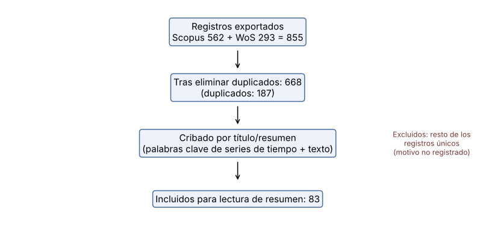

3. Revisión del estado del arte y extracción de los tres modelos base#
Estado de este capítulo
Este capítulo es preliminar. Está construido sobre los dos archivos de resúmenes exportados (Scopus y Web of Science) y sobre las tesis del programa. Para cumplir por completo la Sección 3.1 del enunciado faltan, y quedan a cargo del estudiante: (i) registrar las cadenas booleanas exactas y sus fechas de ejecución, (ii) consultar IEEE Xplore, (iii) documentar el criterio de exclusión de cada registro y quién lo aplicó (la preselección de 83 resúmenes la hizo un asistente de IA con criterios por palabras clave y lectura de resúmenes, sin segundo revisor), y (iv) verificar contra el texto completo los modelos de referencia de cada estudio.
%matplotlib inline
import sys, warnings, json
from pathlib import Path
ROOT = Path.cwd()
while not (ROOT / "src").exists(): ROOT = ROOT.parent
sys.path.insert(0, str(ROOT / "src"))
warnings.filterwarnings("ignore")
import numpy as np, pandas as pd, matplotlib.pyplot as plt
from IPython.display import Markdown, display
plt.rcParams.update({"figure.dpi": 110, "axes.grid": True, "grid.alpha": .25, "figure.figsize": (9, 3.4)})
from tsbase import config as C
from tsbase.data import load_energy, Windows, sha256, energy_path
meta = json.load(open(ROOT / "data/literature/prisma_counts.json")); sel = pd.read_csv(ROOT / "data/literature/selected_83.csv")
3.1 Estrategia de búsqueda y trazabilidad (diagrama tipo PRISMA)#
fig, ax = plt.subplots(figsize=(9, 4.2)); ax.axis("off")
boxes = [(.5, .88, f"Registros exportados\nScopus {meta['scopus']} + WoS {meta['wos']} = {meta['registros_exportados']}"),
(.5, .62, f"Tras eliminar duplicados: {meta['unicos']}\n(duplicados: {meta['registros_exportados']-meta['unicos']})"),
(.5, .36, f"Cribado por título/resumen\n(palabras clave de series de tiempo + texto)"),
(.5, .10, f"Incluidos para lectura de resumen: {meta['seleccionados']}")]
for x, yv, t in boxes: ax.text(x, yv, t, ha="center", va="center", bbox=dict(boxstyle="round", fc="#eef3fb", ec="#4a6fa5"), fontsize=10)
for a, b in zip([.80, .54, .28], [.70, .44, .18]): ax.annotate("", xy=(.5, b), xytext=(.5, a), arrowprops=dict(arrowstyle="->"))
ax.text(.92, .36, "Excluidos: resto de los\nregistros únicos\n(motivo no registrado)", ha="center", va="center", fontsize=8, color="#7a3b3b")
plt.show()

Bases: Scopus y Web of Science (exportaciones del estudiante). Pendientes: IEEE Xplore y, de forma complementaria, arXiv.
Cadena de búsqueda, fecha y número de resultados por cadena: pendiente de registrar por el estudiante (los archivos no incluyen la cadena).
Periodo: el 88 % de los registros únicos son de 2019–2026; 79 son anteriores a 2019 y 3 son de 2027 (publicaciones adelantadas). No se aplicó un filtro de año estricto.
Criterios de inclusión usados en la preselección: relevancia a pronóstico de series + texto, uso de DL, y resumen informativo. Criterios aplicados solo a nivel de resumen; la verificación de métricas verificables y de línea base requiere el texto completo.
Calidad de los estudios (protocolo, fuga, repeticiones, pruebas estadísticas): a nivel de resumen casi ningún estudio reporta control de fuga ni pruebas de significancia; esta afirmación es una observación sobre los resúmenes, no una verificación del texto completo.
3.2 Identificación de los tres modelos base#
Método de extracción. Como aproximación a la tabla de frecuencia (paso 3 del procedimiento) se cuenta en cuántos resúmenes del corpus aparece cada arquitectura. Una mención en el resumen no prueba que el modelo se use como línea base: es un indicador de frecuencia de uso, que debe confirmarse con los textos completos.
c = pd.DataFrame(meta["conteos"]).T; c.columns = ["Resúmenes que la mencionan (corpus único, n=668)", "Resúmenes que la mencionan (selección, n=83)"]
c["% corpus"] = (100 * c.iloc[:, 0] / meta["unicos"]).round(1); c.sort_values(c.columns[0], ascending=False)
| Resúmenes que la mencionan (corpus único, n=668) | Resúmenes que la mencionan (selección, n=83) | % corpus | |
|---|---|---|---|
| Transformer | 145 | 21 | 21.7 |
| LSTM | 130 | 24 | 19.5 |
| CNN 1D / TCN | 71 | 7 | 10.6 |
| RNN (genérica/simple) | 66 | 5 | 9.9 |
| RF/XGBoost (clásico) | 38 | 6 | 5.7 |
| MLP / red feed-forward | 33 | 7 | 4.9 |
| ARIMA (clásico) | 32 | 4 | 4.8 |
| GRU | 28 | 7 | 4.2 |
| SVM/SVR (clásico) | 21 | 0 | 3.1 |
base = sel[["LSTM", "GRU", "RNN", "MLP", "CNN"]].sum().to_frame("estudios de la selección (n=83) que mencionan el modelo")
base["…y mencionan 'baseline/benchmark/compared/outperform'"] = [int(((sel[k] == 1) & (sel["baseline"] == 1)).sum()) for k in base.index]
base
| estudios de la selección (n=83) que mencionan el modelo | …y mencionan 'baseline/benchmark/compared/outperform' | |
|---|---|---|
| LSTM | 24 | 12 |
| GRU | 7 | 2 |
| RNN | 5 | 2 |
| MLP | 7 | 2 |
| CNN | 7 | 4 |
Selección (exactamente tres). Entre las arquitecturas de DL básicas, las más recurrentes en el corpus son LSTM (la más frecuente), CNN (1D/TCN), las RNN y los MLP/redes feed-forward; la GRU es la menos citada. El enunciado exige tres modelos de menor complejidad y no redundantes (distinto sesgo inductivo), por lo que se eligen:
Modelo base |
Sesgo inductivo |
Equivalente clásico |
|---|---|---|
MLP sobre ventana de rezagos (1 capa oculta) |
ninguno sobre el orden; mapea la ventana completa |
regresión lineal/AR con no linealidad |
LSTM de una capa |
recurrencia con memoria y compuertas; procesamiento secuencial |
modelo de espacio de estados / ARMA no lineal |
CNN 1D poco profunda (1–2 capas) |
invarianza traslacional local; patrones locales |
filtros FIR no lineales |
Se descartan la RNN simple (casi redundante con la LSTM pero con peor entrenamiento por gradientes que se desvanecen) y la GRU (variante de la LSTM, es redundante con ella en sesgo inductivo). Los modelos de la literatura multimodal reciente (Transformers, LLM adaptados) no son base mínima: son los modelos «avanzados» que el baseline debe poder superar; Tan et al. (2024) muestran incluso que, en pronóstico, módulos con LLM no superan a variantes simples (referencia 4).
Equivalencia con los modelos clásicos de referencia (modelo logístico / SVR lineal). Cumplen la misma función de línea mínima: capacidad de representación acotada (ver conteo de parámetros en el Cap. 5), pocos supuestos (entradas y salidas continuas, sin estructura extra), y propósito comparativo. Como referencia de contexto no profunda se usa Ridge lineal sobre la misma ventana (no cuenta como modelo base).
Si la arquitectura no está definida en la literatura (p. ej., «un MLP»), el enunciado ordena no elegirla por criterio personal sino aplicar la búsqueda del Entregable 2, declarando el espacio antes de entrenar. Eso se hizo: los espacios están en el preregistro (PREREGISTRO.md) y en el Cap. 4, con el mismo presupuesto (12 configuraciones aleatorias) para los tres modelos.
3.3 Análisis detallado por modelo base#
MLP sobre rezagos#
Ecuaciones (1 capa oculta): \(\mathbf{h}=\mathrm{ReLU}(W_1\mathbf{x}+b_1)\), \(\hat{\mathbf{y}}=W_2\,\mathrm{Dropout}(\mathbf{h})+b_2\), con \(W_1\in\mathbb{R}^{d\times L}\), \(W_2\in\mathbb{R}^{H\times d}\).
Supuestos/sesgo: ninguna estructura temporal explícita; todas las posiciones de la ventana tienen pesos independientes.
Parámetros: \((L+1)d+(d+1)H\) por capa oculta (con \(d\) unidades, 1 capa). Costo por ejemplo (forward): \(O(Ld+dH)\).
Fortalezas: simple, rápido, fácil de reproducir. Limitaciones: no explota el orden; sensible al tamaño de ventana y a la regularización.
LSTM de una capa#
Ecuaciones: \(f_t=\sigma(W_f[h_{t-1},x_t]+b_f)\), \(i_t=\sigma(W_i[\cdot]+b_i)\), \(\tilde c_t=\tanh(W_c[\cdot]+b_c)\), \(c_t=f_t\odot c_{t-1}+i_t\odot\tilde c_t\), \(o_t=\sigma(W_o[\cdot]+b_o)\), \(h_t=o_t\odot\tanh(c_t)\); salida \(\hat{\mathbf y}=W h_L + b\).
Parámetros (PyTorch, entrada escalar): \(4d(d+3)+(d+1)H\). Costo: \(O(L d^2)\) por ejemplo (secuencial).
Fortalezas: modela dependencias de largo plazo con compuertas. Limitaciones: entrenamiento más lento y mayor varianza entre semillas (se observa en el Cap. 6).
CNN 1D poco profunda#
Ecuaciones: \(z^{(c)}_t=\mathrm{ReLU}\big(\sum_{j}w^{(c)}_j x_{t+j-\lfloor k/2\rfloor}+b^{(c)}\big)\), aplanado y capa lineal a \(H\) salidas.
Parámetros: \(C(k+1)\) la primera capa, \(C(kC+1)\) las siguientes, más \((CL+1)H\) la cabeza. Costo: \(O(LkC^2)\).
Fortalezas: detecta patrones locales con pocos pesos compartidos. Limitaciones: campo receptivo limitado; la cabeza aplanada domina el número de parámetros.
Pérdida y optimización habituales: MSE (o MAE) y Adam con early stopping; es la configuración usada aquí.
Referencias verificadas que respaldan la arquitectura (las de uso como línea base en estudios concretos deben completarse tras leer el texto completo):
Hochreiter, S., Schmidhuber, J. (1997). Long Short-Term Memory. Neural Computation 9(8). DOI: 10.1162/neco.1997.9.8.1735
Hyndman, R. J., Koehler, A. B. (2006). Another look at measures of forecast accuracy. Int. J. Forecasting 22(4). DOI: 10.1016/j.ijforecast.2006.03.001
Liu, H. et al. (2024). Time-MMD: Multi-Domain Multimodal Dataset for Time Series Analysis. arXiv:2406.08627.
Tan, M. et al. (2024). Are Language Models Actually Useful for Time Series Forecasting? NeurIPS 2024. arXiv:2406.16964.
3.4 Comparación crítica y brecha#
Desempeño reportado en la literatura: los resúmenes no permiten una comparación cuantitativa uniforme (distintos datasets, horizontes y métricas); una tabla de síntesis con valores verificados exige leer los textos completos. Esta tabla queda pendiente (columnas exigidas: referencia, problema, dataset, modelos básicos de referencia, métricas, valores).
Validez de los estudios: en los resúmenes casi no se declara control de fuga temporal, número de repeticiones ni pruebas de significancia; es la razón por la que este proyecto adopta un protocolo con cronología estricta, semillas repetidas e inferencia formal.
Brecha candidata (verificable): en Time-MMD y trabajos derivados se reportan mejoras promedio de MSE al añadir texto, pero sin comparar contra baselines básicos de DL tuneados con el mismo presupuesto y con inferencia estadística pareada. Este E1 establece ese baseline para el dominio Energy; E2/E3 lo usarán para medir si el texto aporta.
Brecha de desempeño modelos avanzados vs. base: pendiente de cuantificar con valores de los textos completos (no se inventa aquí).
Estudios de la selección que mencionan modelos básicos#
sel[sel[["LSTM", "GRU", "RNN", "MLP", "CNN"]].sum(axis=1) > 0][["anio", "titulo", "venue", "LSTM", "GRU", "RNN", "MLP", "CNN", "baseline"]].head(40).reset_index(drop=True)
| anio | titulo | venue | LSTM | GRU | RNN | MLP | CNN | baseline | |
|---|---|---|---|---|---|---|---|---|---|
| 0 | 2027 | LEAP: A Leakage-Free Evolutionary Alpha Pipeli... | Lecture Notes in Computer Science | 0 | 0 | 0 | 1 | 0 | 0 |
| 1 | 2026 | AI-POWERED FINANCIAL DECISION-MAKING FRAMEWORK... | Proceedings on Engineering Sciences | 1 | 0 | 0 | 0 | 0 | 0 |
| 2 | 2026 | A Hybrid LSTM-Based Model for Stock Price Pred... | 2026 IEEE 18th International Conference on Com... | 1 | 0 | 0 | 0 | 0 | 0 |
| 3 | 2026 | Impact of Social Media Sentiment on Bitcoin Pr... | Lecture Notes in Networks and Systems | 1 | 1 | 0 | 0 | 0 | 0 |
| 4 | 2026 | Toward Intelligent Financial Advisory: Hybrid ... | Lecture Notes in Networks and Systems | 0 | 1 | 0 | 0 | 0 | 0 |
| 5 | 2026 | Financial News Sentiment as a Key Indicator of... | AICCC 2025 - 2025 8th Artificial Intelligence ... | 0 | 1 | 0 | 0 | 0 | 0 |
| 6 | 2026 | Impact of Regulatory Announcements and Sentime... | 2026 International Conference on Intelligent S... | 1 | 0 | 0 | 0 | 0 | 0 |
| 7 | 2025 | AdamW-LSTM Next-Generation Economic Forecastin... | 2025 IEEE 5th International Conference on ICT ... | 1 | 0 | 0 | 0 | 0 | 1 |
| 8 | 2025 | An Intelligent Multi-Modal Framework for AI-Dr... | Proceedings of 5th International Conference on... | 1 | 0 | 0 | 0 | 1 | 1 |
| 9 | 2025 | Design Hybrid Model To Improve Stock Selection... | 2025 International Conference on Computing Tec... | 1 | 1 | 0 | 0 | 0 | 1 |
| 10 | 2025 | Sentiment-Driven Sector Forecasting: An NLP Ba... | 2025 IEEE 16th Annual Information Technology, ... | 1 | 0 | 0 | 0 | 0 | 1 |
| 11 | 2025 | GNN-based social media sentiment analysis for ... | Expert Systems with Applications | 1 | 0 | 0 | 0 | 1 | 1 |
| 12 | 2025 | An integrated model of sentiment analysis and ... | EXPERT SYSTEMS WITH APPLICATIONS | 1 | 1 | 0 | 1 | 1 | 0 |
| 13 | 2025 | How well can ChatGPT forecast tourism demand? | Tourism Management | 1 | 0 | 0 | 1 | 0 | 1 |
| 14 | 2025 | Should We Reconsider RNNs for Time-Series Fore... | AI | 1 | 1 | 1 | 1 | 0 | 1 |
| 15 | 2024 | Market Price Anticipation using Sentimental An... | 15th International Conference on Advances in C... | 1 | 0 | 1 | 0 | 0 | 0 |
| 16 | 2024 | Improving Stock Index Prediction Based on Fina... | Proceedings - 2024 8th International Conferenc... | 1 | 0 | 0 | 0 | 0 | 0 |
| 17 | 2024 | Design and Development of an Ensemble Model fo... | Deep Learning Tools for Predicting Stock Marke... | 1 | 0 | 0 | 0 | 0 | 1 |
| 18 | 2024 | High-Density Polyethylene Film Price Forecast ... | Engineering Journal | 1 | 0 | 0 | 0 | 1 | 1 |
| 19 | 2024 | Beyond Words: Adapting NLP Methodologies for T... | 2024 4th International Conference on Intellige... | 0 | 0 | 0 | 1 | 1 | 0 |
| 20 | 2024 | A decoder-only foundation model for time-serie... | Proceedings of Machine Learning Research | 0 | 0 | 0 | 0 | 1 | 0 |
| 21 | 2024 | Transformer-Based Models for Commodity Trading... | Proceedings - 2024 7th International Conferenc... | 1 | 0 | 0 | 0 | 0 | 0 |
| 22 | 2023 | Impact of News Sentiment on Foreign Exchange R... | 2023 3rd International Conference on Intellige... | 1 | 0 | 0 | 0 | 0 | 1 |
| 23 | 2023 | Deep Learning-Based Investor Sentiment Indicat... | Proceedings - 2023 3rd International Signal Pr... | 1 | 0 | 0 | 0 | 0 | 0 |
| 24 | 2023 | THE IMPLEMENTATION OF GLOVE TEXT EMBEDDINGS AN... | ICIC Express Letters | 0 | 0 | 1 | 1 | 0 | 0 |
| 25 | 2023 | One Fits All: Power General Time Series Analys... | Advances in Neural Information Processing Systems | 0 | 0 | 0 | 1 | 0 | 0 |
| 26 | 2022 | Evaluation of News Sentiment in Economic Activ... | Engineering Proceedings | 1 | 1 | 1 | 0 | 0 | 0 |
| 27 | 2022 | Do Deep Learning Models and News Headlines Out... | Lecture Notes in Networks and Systems | 1 | 0 | 1 | 0 | 0 | 1 |
| 28 | 2022 | Deep Learning-Based Sentiment Analysis for Pre... | Lecture Notes in Computer Science (including s... | 1 | 0 | 0 | 0 | 0 | 0 |
| 29 | 2022 | Multi-Modal Fusion Transformer for Multivariat... | 2022 14th International Conference on Advanced... | 0 | 0 | 0 | 0 | 1 | 1 |
| 30 | 2021 | Stock Return Prediction using Financial News: ... | Proceedings - 2021 International Conference on... | 1 | 0 | 0 | 0 | 0 | 1 |
| 31 | 2020 | BELT: A Pipeline for Stock Price Prediction Us... | Proceedings - 2020 IEEE International Conferen... | 1 | 0 | 0 | 0 | 0 | 0 |